Convert angles to ggplot2 vjust
Arguments
- theta
angle in radians
- multiplier
distance from point
- as_degrees
use degrees instead of radians
Examples
library(tibble)
library(ggplot2)
library(dplyr)
#>
#> Attaching package: 'dplyr'
#> The following objects are masked from 'package:stats':
#>
#> filter, lag
#> The following objects are masked from 'package:base':
#>
#> intersect, setdiff, setequal, union
xy_ratio <- pi
tibble(theta = seq(0,2*pi, length.out = 9),
y = sin(theta),
slope = cos(theta) * xy_ratio,
text_angle = atan(slope) + pi / 2) %>%
ggplot(aes(theta,y)) +
stat_function(fun = sin) +
geom_point() +
geom_label(aes(label = LETTERS[1:9],
vjust = angle2vjust(text_angle, multiplier = 1.5),
hjust = angle2hjust(text_angle, multiplier = 1.5)),
label.size = NA,
label.padding = unit(1, "mm")) +
scale_x_continuous(expression(theta),
breaks = seq(0,2*pi, length.out = 9),
labels = label_parsed(c("0", "frac(pi,4)", "frac(pi,2)",
"frac(3 * pi,4)", "pi", "frac(5*pi,4)",
"frac(3 * pi,2)", "frac(7*pi,4)", "2*pi"))) +
scale_y_continuous(expression(sin(theta))) +
coord_fixed(ratio = xy_ratio, clip = "off") +
theme_minimal()
